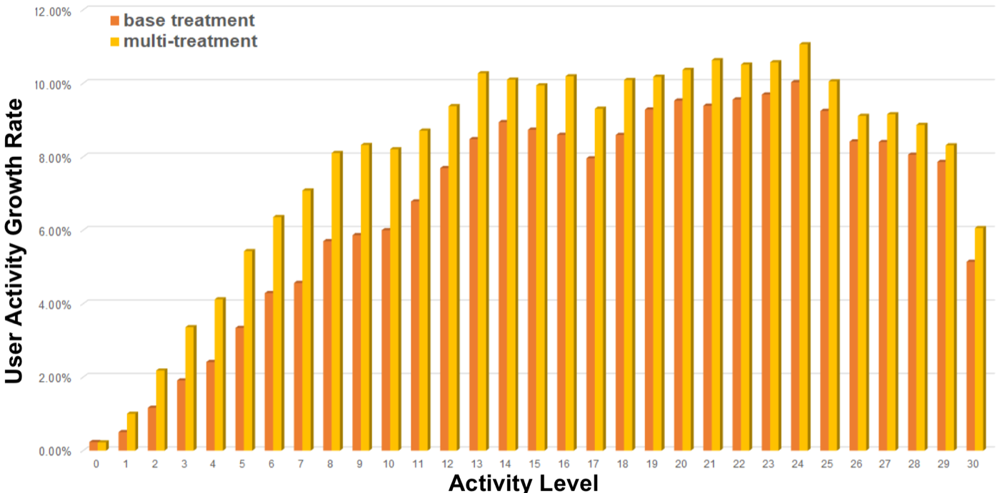
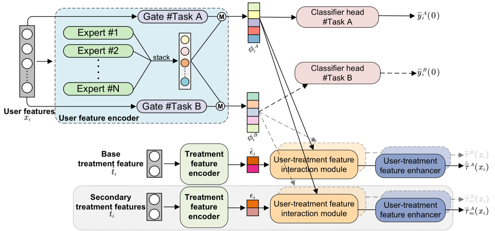
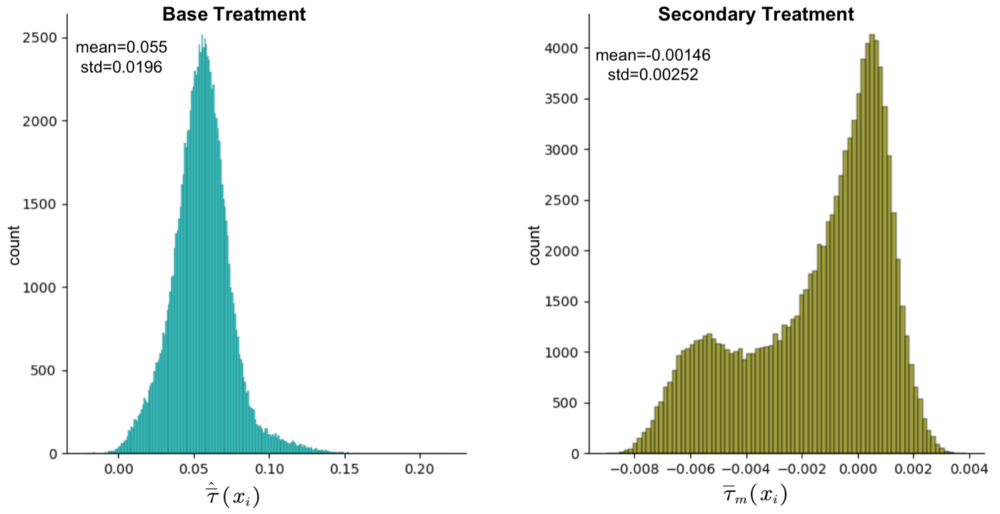

- \(\Gamma_m^k = {\color{#C2410C}\hat\tau^k} + {\color{#1D4ED8}\tau_m^k}\)処置 \(m\) のタスク \(k\) への効果を、ボーナスを配るかどうかの基本効果と、種類 \(m\) を選んだことによる増分効果の和として推定する。
- QINI 0.0324 対 0.01622 種類のボーナスを比べた自社データで、ボーナス A についての MTMT と、既存手法で最も高かった M3TN の値（Table 2）。
- 0.0324 → 0.0249基本効果と増分効果を分けずに一つの出力で推定すると、ボーナス A の QINI がこれだけ下がった。ボーナス B では 0.0291 から 0.0233（Table 3）。
実際の施策では処置も反応も複数あるが、既存のアップリフトモデルの多くは一つずつしか扱わない
アップリフトモデリングは処置を受けたときと受けないときの反応の差（個人の処置効果、ITE）を利用者ごとに推定する。論文が対象にするのはオンラインゲームのボーナスで、ボーナスがないと次のゲームを遊ばない人もいれば、ボーナスがなくても遊び続ける人もいる。
実際には、ボーナスの種類が複数あり（多処置）、翌日のログインや 1 週間のプレイ量など複数の反応を同時に伸ばしたい（多タスク）。論文によれば、既存研究の多くは処置も反応も一つの設定を扱っている。多処置か多タスクの一方を扱う研究はあるが、処置や反応に前提を置かずに両方を扱うのは、著者らの知る限りこの研究が初めてである。処置の特徴を入力に使う手法でも、処置の埋め込みと利用者の特徴を連結や重みつき和で混ぜるだけで、タスクごとの関係までは捉えていないと論文は指摘する。
ボーナスを配るかどうかによる差は、どのボーナスを配るかによる差よりずっと大きい
論文の観察では、オンラインでの反応の差は「処置群と対照群の間」より「処置の種類の間」のほうがずっと小さい。図 1 は自社のゲームサーバーで、基本の処置だけを行った場合と、複数の処置を使い分けた場合の活動の伸び率を、過去の活動度ごとに並べたものである。
処置ごとに反応を予測して対照群との差をとる構成では、大きな基本効果の中に小さな種類間の差が埋もれる。論文は処置をまとめて一つの効果として推定すると、どの処置を選ぶかの判断が最適でなくなりうると述べている。

効果を「配るかどうか」の基本効果と「どれを配るか」の増分効果の和に分ける
利用者 \(i\) の特徴を \(x_i\)、ボーナスを配るかどうかを表す基本処置を \(\hat t_i \in \{0,1\}\)、ボーナスの種類を表す二次処置を \(t_i\)、\(k\) 個のタスクの反応を \(y_i\) とする。論文は処置 \(m\) のタスク \(k\) への全体の効果 \(\Gamma_m^k\) を次のように分ける。
ここで \(y_i^k(1)\) は何らかの処置を受けたときの反応、\(y_i^k(m)\) は処置 \(m\) を受けたときの反応である。基本効果は処置群に入ること自体の効果、増分効果はその上に種類 \(m\) が加える効果で、処置群にいるときだけ意味を持つ。論文はボーナスを配るかどうかの判断を Treatment Decision、どのボーナスかの判断を Treatment Selection と呼んでいる。
利用者の特徴をタスクごとに符号化し、処置との注意機構で基本効果と増分効果を別々に出力する
MTMT は利用者の特徴と処置を別々に符号化する（図 2）。利用者の特徴は multi-gate mixture-of-experts（MMOE）で符号化する。複数のエキスパート（それぞれ ResNet18）の出力を積み重ね、タスクごとのゲートで重みをつけて、タスク \(k\) の表現 \(\phi_i^k\) を作る。この表現には処置の情報が入っていないので、線形の出力層で処置しない場合の反応 \(\bar y_i^k(0)\) を予測する。
基本処置と二次処置は、それぞれ one-hot 表現に学習可能な行列を掛けて埋め込む。次に、処置の埋め込みを query、利用者の表現 \(\phi_i^k\) を key と value とする注意機構（user-treatment feature interaction module）で、処置が利用者のどの特徴に注目するかを計算し、処置を反映した表現を作る。これを MLP で整えてから射影し、基本効果 \(\hat{\bar\tau}^k(x_i)\) と増分効果 \(\bar\tau_m^k(x_i)\) を出力する。処置 \(m\) を受けたときの反応の予測は次の和になる。
学習では、対照群の反応を \(\bar y_i^k(0)\) に、処置群の反応を \(\bar y_i^k(m)\) に合わせる二乗誤差を、全タスクについて足して最小にする。推論では二つの効果を直接計算して利用者を並べ、配るかどうかと、どのボーナスを配るかを決める。処置が決まっていない利用者には、ありうる処置の組合せをすべて試して効果を比べる。

公開データ CRITEO と、ランダム化比較試験で集めたゲームの自社データで評価した
公開データは広告のアップリフトデータ CRITEO の約 1,400 万件（連続変数 12 個）で、反応は来訪（visit）である。自社データは Tencent のオンラインゲームの 1,000 万件超（約 700 変数）で、交絡の影響を抑えるためにランダム化比較試験で集めた。多タスクの設定では、翌日にログインするか（短期の活動）と、その後 7 日間でより多く遊ぶか（長期の活動）の 2 つの二値反応を使う。
多処置の設定では基本処置を「ボーナスを配るか」、二次処置を「ボーナスの種類（A か B）」とする。実運用では一部の利用者にしか出せないボーナスがあるため、すべてのボーナスを出せる利用者だけを選んだ多処置用のデータを別に集めている。評価指標は正規化した QINI と AUUC、上位 30% での効果（LIFT@30）である。
以下の数値は arXiv v1（2024 年 8 月 23 日）の本文と表による。同じ著者による改題版「MTMT: Tiered treatment effect decomposition for multi-task uplift modeling」が Neurocomputing 700 巻（2026 年）に掲載されているが、その本文は自動取得できなかったため照合していない。
処置が一つの設定でも、MTMT の QINI はどのデータでも比較手法を上回った
処置が一つの設定では、MTMT の基本効果だけを使って配るかどうかを決める（論文 Table 1）。CRITEO での QINI は MTMT が 0.164 で、比較手法で最も高い FlexTENet は 0.0779 だった。自社データでも、短期の活動で 0.0886（比較手法の最高は EFIN の 0.0725）、長期の活動で 0.360（同じく S-Learner の 0.131）と、比較手法を上回った。比較したのは S-Learner、T-Learner、CFR、DragonNet、EUEN、DESCN、FlexTENet、EFIN、M3TN の 9 手法である。
2 つのタスクを一つのモデルで学習した多タスク版の QINI は、短期 0.0586、長期 0.154 で、タスクごとに学習した場合より下がった。論文はこれを「わずかに下がる」と表現し、それでも比較手法よりかなりよいとしている。なお Table 1 では、自社データの短期の活動での EFIN の QINI と AUUC（0.0725、0.0293）が、CRITEO での EFIN の値と同じになっている。
ボーナスが 2 種類ある設定では、MTMT が AUUC と LIFT@30 で比較手法を上回った
多処置のデータでは、S-Learner と T-Learner を多処置向けに拡張したものと、HydraNet、EFIN、M3TN を比べた（論文 Table 2）。ボーナス A では、MTMT の QINI は 0.0324 で、比較手法で最も高い M3TN の 0.0162 の 2 倍だった。ボーナス B の AUUC は MTMT が 0.0782、EFIN が 0.0513 である。ただしボーナス B の QINI は EFIN が 0.0294、MTMT が 0.0291 で、表では MTMT が太字になっているが、値は EFIN のほうがわずかに大きい。
構成要素を外す実験（論文 Table 3）では、基本効果と増分効果を分けずに一つの出力で推定すると、QINI がボーナス A で 0.0324 から 0.0249 に、B で 0.0291 から 0.0233 に下がった。処置が一つの設定で利用者・処置の注意機構を行列積に置き換えると、短期の活動の QINI は 0.0886 から 0.0426 に下がった。多タスクの設定でタスクごとの推定をやめると QINI は下がったが、短期の活動の LIFT@30 は 0.0326 から 0.035 に上がっている。
自社データで推定した効果の分布（図 4）では、基本効果の平均は 0.055 で、増分効果の平均よりずっと大きい。論文はこれを、図 1 のオンラインでの観察と一致する結果としている。MTMT は自社のゲームプラットフォームに導入されており、推定した基本効果と増分効果で利用者をバケットに分け、ゲームサーバーが一定の制約のもとで、配るかどうかと、どのボーナスを配るかを決める。

費用と予算は扱わず、多値処置の効果を「配るか」と「どれを配るか」に分けて推定する
この論文が推定するのは、利用者ごと・タスクごとの基本効果 \(\hat\tau^k(x_i)\) と、ボーナスの種類 \(m\) による増分効果 \(\tau_m^k(x_i)\) である。反応は翌日のログインや 7 日間のプレイ増といった二値で、効果はその確率の差にあたる。処置は「配るかどうか」と「A か B か」を組み合わせた多値処置で、論文は二値でない処置への拡張を今後の課題に挙げている。
ボーナスの費用はモデルにも評価にも入らない。序論でインセンティブは費用がかかると述べているが、推定する量も QINI などの指標も費用を含まない。予算制約も扱っていない。運用では、推定値で分けたバケットごとに、ゲームサーバーが「一定の制約」に基づいて配布を決めると書かれているが、その制約の中身は記されていない。
予算制約つきの割当てでは、増分効果を費用で割った比の大きい順に配る（ナップザック問題の連続緩和）。多値処置では、処置ごとの比に加えて、安い処置から高い処置へ切り替えたときの効果の増分と費用の増分の比も比べる。MTMT の基本効果はこの比の分子に、二つの種類の増分効果の差 \(\tau_A^k - \tau_B^k\) は A と B を入れ替えたときの分子に使える形をしている。ただし分母になる費用は別に見積もる必要があり、二つの効果を予算のもとでどう組み合わせるかはこの論文の範囲外である（解説者の注）。
@misc{wei2024mtmt,
title = {Multi-Treatment Multi-Task Uplift Modeling for Enhancing User Growth},
author = {Wei, Yuxiang and Qiu, Zhaoxin and Li, Yingjie and Sun, Yuke and Li, Xiaoling},
year = {2024},
eprint = {2408.12803},
archivePrefix = {arXiv},
primaryClass = {cs.LG}
}
@article{wei2026mtmt,
title = {{MTMT}: Tiered treatment effect decomposition for multi-task uplift modeling},
author = {Wei, Yuxiang and Qiu, Zhaoxin and Li, Yingjie and Sun, Yuke and Li, Xiaoling},
journal = {Neurocomputing},
volume = {700},
pages = {134494},
year = {2026},
doi = {10.1016/j.neucom.2026.134494}
}